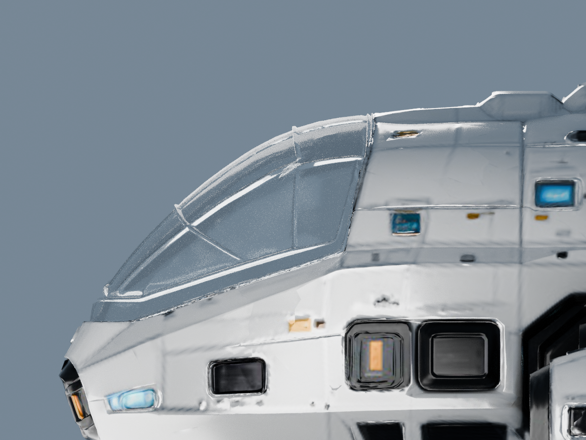
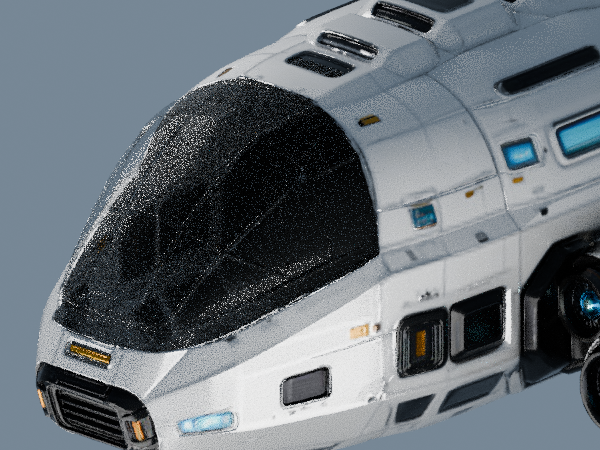
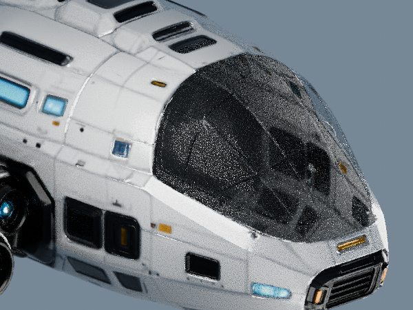

保留 r2 玻璃和已修正线位，仅平顺两侧交点的光学法线，减弱尖角白斑。当前为待确认候选，原件及旧版保留。

左右均为实际 GLB 离线渲染，r9 与 r10 使用相同机位、灯光、1200×900 和64采样。局部高光改善不等同于整船视觉验收；没有改材质、顶点、线位或增加结构。
斜向下观察时仍可能看到舱内背面的阴影；“只看船壳 / 只看玻璃”可用于区分真实遮挡与玻璃反射。玻璃高光和边缘粗糙度仍由你判断。
3D 对照需从项目开发服务打开，并使用项目已有的 Three.js 依赖。静态对照可直接打开查看。保留的 r9 对照 · 最初 r2 对照。


其他视角：正前 · 俯视 · 后视 · 底视
可以先看上方对照。拖拽旋转、右键平移、滚轮缩放；WASD / 方向键移动，Q / E 升降。